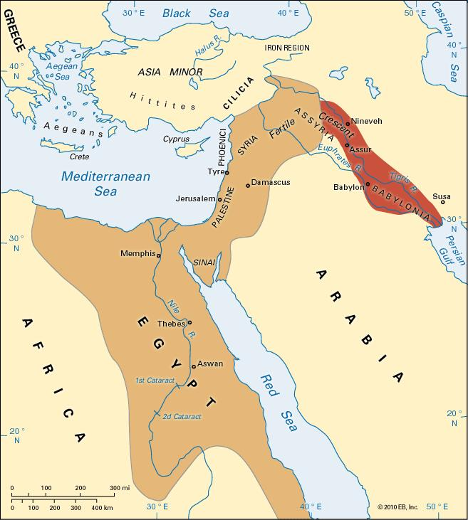

The Egyptian Empire vs. The Nubian Empire: A Struggle for the Nile
By: Lucy
Introduction
The ancient civilizations of Egypt and Nubia were among the most powerful in Africa, both vying for control of the Nile River. The timeless rivalry between these great empires shaped the region's history and culture, leaving behind a legacy that still fascinates the modern world. From the construction of monumental structures like the pyramids and the temples of Abu Simbel to the development of a complex script and calendar, the Egyptians and Nubians achieved remarkable achievements in science, art, and governance.
However, despite the similarities between them, the Egyptian and Nubian civilizations developed different cultural identities, religions, and political systems that often led to conflict. The Nile River, which provided water and fertile land for agriculture, was the main source of tension, as both empires sought to control its resources and trade routes. Whether through diplomacy or warfare, the Egyptians and Nubians engaged in a struggle for dominance that lasted for centuries, leaving behind a wealth of historical evidence that sheds light on their respective societies.
In this website, we will explore the fascinating story of Egypt and Nubia's rivalry, their complex relationship, and the legacies they left behind. Through a series of articles, photos, and videos, we will delve into topics ranging from religion, art, and architecture to war, trade, and diplomacy. Our goal is to offer a comprehensive overview of the Egyptian and Nubian empires, and their impact on the Nile Valley and beyond. Join us on this journey through time and discover the world of ancient Africa.
ad space
Geographical Differences
The ancient empires of Egypt and Nubia share a complex and intertwined history, rooted in their proximity along the Nile River. One aspect of this history that is often overlooked is the impact of geography on the development and interactions of these two great civilizations.
The Nile River served as the lifeblood of both the Egyptian and Nubian empires. This waterway provided a vital source of freshwater and fertile land for agriculture, as well as an important transportation route for trade and military expeditions. However, the Nile also presented unique challenges and opportunities for these societies, depending on their geographic location.
The Ancient Egyptians were situated primarily in the floodplain of the lower Nile, where the river delta meets the Mediterranean Sea. This region provided rich agricultural land ideal for growing crops, such as wheat and barley. Additionally, the delta acted as a natural barrier to invading forces from the north, providing a sense of security for the Egyptian people.
Nubia, on the other hand, was located primarily in the desert region to the south of Egypt. This meant that the Nubian empire had to rely heavily on the Nile for water and transportation, as well as on trade with their neighbors to the north. However, Nubia also had access to valuable mineral resources, such as gold and copper, that were necessary for trade and military purposes.
Despite these differences, both the Egyptian and Nubian empires were tied together by their mutual dependence on the Nile River. They engaged in frequent trade and diplomatic exchanges, as well as military conflicts over control of the river and its resources. The impact of geography on their development and struggles cannot be overlooked when examining the complex history of these ancient civilizations.
ad space
Military Conflicts
The Nile River has been the backbone of Egypt since time immemorial. Its fertile banks provided food, water, and other resources that made Egypt grow into a formidable empire. However, it was not just the Egyptians who relied on the Nile. The Nubians, who lived further upstream, also staked their claim to the river's resources. Thus, began a struggle for the Nile that lasted for centuries, and it was often marked by military conflicts.
The Egyptians and the Nubians were equally matched in terms of military prowess, and both empires had strong armies. The Egyptians had chariots, which gave them an advantage in open terrain, while the Nubians had archers who could take out their enemies from a distance. The battles between the two empires were often brutal and were fought on land and water.
One of the most famous battles between the Egyptians and the Nubians was the Battle of Qadesh in 1274 BC. This battle was fought between the Egyptian Pharaoh Ramses II and the Hittite King Muwatalli II. Ramses II had brought a massive army of chariots and soldiers, while Muwatalli had a well-equipped army of spearmen and archers. The battle was fought on the banks of the Orontes River, and it lasted for two days. The Egyptians emerged victorious, but it was a costly victory, and they were never able to fully subdue the Hittites.
Apart from the Battle of Qadesh, there were many other battles fought between the two empires on the Nile. However, in the end, it was the Egyptians who emerged victorious, and they were able to maintain their hold on the Nile for centuries. The Egyptians were able to create a highly-organized military machine that allowed them to successfully defend their territory from the Nubians and other invaders. Meanwhile, the Nubians were able to maintain their own unique culture and way of life, despite being a smaller empire. The struggle for the Nile may have ended, but the legacy of these two great empires lives on.
ad space
Religious and Cultural Differences
The conflict between the Egyptian Empire and the Nubian Empire was not just about conquering territories and resources; it was also a clash of religious and cultural differences. While the Egyptians followed a pantheon of gods and goddesses, the Nubians revered a single god, as well as ancestral spirits. These beliefs manifested in their art, architecture, and daily practices.
The Egyptians saw themselves as the superior civilization and looked down on the Nubians as “barbarians.” The Nubians, on the other hand, had a deep pride in their culture and wanted to maintain their independence. This led to numerous wars fought between the two empires.
The differences in religion and culture were also evident in their constructions. The Egyptians built grandiose temples and pyramids, while the Nubians created more modest structures, but with intricate carvings and paintings. The Egyptians made intricate jewelry, while the Nubians created exquisite pottery. These differences are silent reminders of the vast cultural gap that existed between the two empires.
The fact that the Egyptians believed in an afterlife meant that they needed to preserve the body of the deceased, which marked the beginning of mummification. Conversely, the Nubians believed that the body was insignificant and that the spirit was all that mattered.
The Egyptians adopted a writing system called hieroglyphs, which they inscribed on monumental stones, papyri, and other objects. In the Nubian Empire, the writing was limited to rock art and inscriptions on pottery.
In conclusion, religious and cultural differences played a pivotal role in the struggle between the Egyptian Empire and the Nubian Empire. These differences were evident in their art, architecture, and daily practices and have left a lasting impact on the world.
ad space
Technological and Economic Advancements
The ancient Egyptian and Nubian empires were two of the most powerful civilizations in Africa, with a storied history of rivalry and conflict. As they battled for control of the Nile, both empires engaged in technological and economic advancements that enabled them to extend their power and influence throughout the region.
The Egyptians, for instance, were known for their extensive use of irrigation systems, which allowed them to cultivate crops even in the drylands of the desert. The construction of the massive pyramids and other architectural wonders testify to their mastery of engineering and building technologies. They also had a sophisticated legal system, which helped to maintain social order and stability.
The Nubians, on the other hand, were renowned for their technological prowess in metallurgy, which enabled them to produce advanced weapons and tools. They also established a thriving trade network, which brought valuable commodities such as gold, ivory, and ebony from Sub-Saharan Africa to the Mediterranean. Their rulers were often powerful queens who led military campaigns and controlled vast territories.
Despite their different approaches, both empires owed their success to their technological and economic progress. By investing in infrastructure, education, and innovation, they created the necessary conditions for sustained growth and prosperity. Their legacy is still visible today, as much of modern Egypt and Sudan is built atop the foundations of these ancient civilizations.
In the end, both the Egyptian and Nubian empires contributed to the development of Africa and the world at large. Their achievements in technology and economics are a testament to the human spirit of innovation and determination, which has driven us forward through the ages. Whether you are a history buff or simply curious about the past, exploring the complex and fascinating story of these two empires is sure to leave you inspired and amazed.
ad space
Conclusion
For centuries, the Egyptian Empire and the Nubian Empire battled for control over the Nile River. While both empires developed complex societies, unique cultures, and formidable military forces, the battle for control of the Nile ultimately favored the Egyptians. With its vast resources and strategic location, the Nile has been the lifeblood of Egypt, providing much-needed irrigation for crops, a source of trade, and crucial freshwater for a growing population.
However, the Nubian Empire was a formidable adversary, and the conflict between the two empires played out for centuries. The Nubians were known for their skilled archers and formidable cavalry, and they controlled a vast stretch of the Nile Valley. Despite the determined resistance of the Nubians, the Egyptians ultimately prevailed. Their superior military tactics, advanced weaponry, and shrewd diplomacy helped them to eventually gain control of the vital Nile region.
Today, the legacy of the struggle between the Egyptian Empire and the Nubian Empire lives on. The two cultures exerted a profound influence on one another, exchanging ideas, technology, and even language. Despite the centuries of conflict, the two empires also shared much in common, including a reverence for the Nile and the complex societies that arose along its banks.
As we conclude our exploration of the Egyptian and Nubian Empires, it is clear that the two civilizations played a pivotal role in shaping the history of the Nile region. From the towering pyramids of Egypt to the intricate mud-brick architecture of Nubia, these empires left a lasting imprint on the landscape and the human experience. The struggle for the Nile may be over, but its echoes continue to resonate even today.
ad space